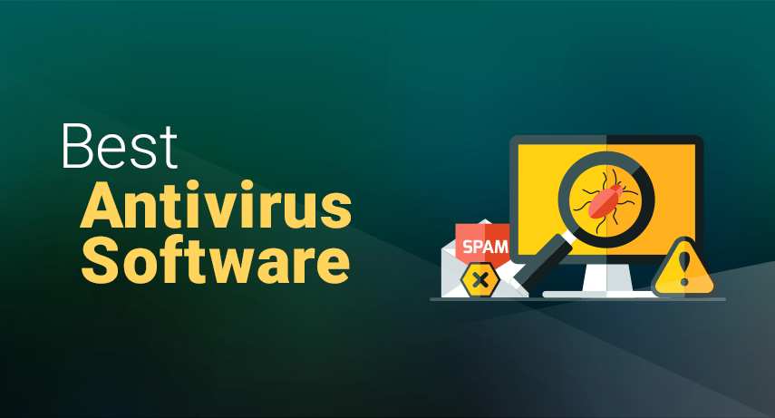
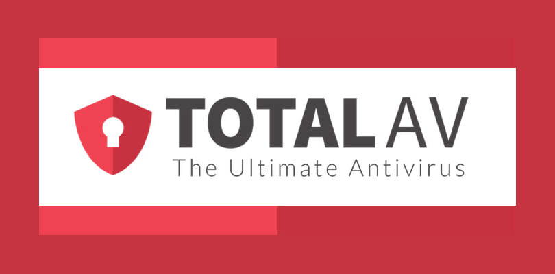
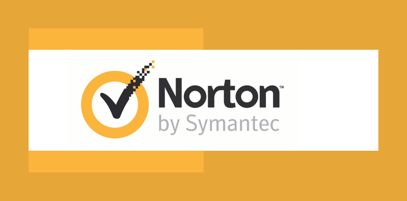

Top Antivirus Programs For Windows, Android, iOS & Mac
James McGill | Updated on March 22nd 2024Privacy and Technology Consultant In a hurry? Here’s the top Antivirus Software for 2025:
With dozens of antivirus programs in the market today, choosing the best protection that falls within your budget might be a tall order. Sure, it can be a tad overwhelming, wading through all the information and technical jargon. Still, as long as you know what you're looking for, it's not that hard. Be wary about downloading some "cheap" and "free" antivirus brands, though, as many of these lesser-known brands are malware in disguise. Before you download anything, make sure that the software comes from a trustworthy and legitimate brand.
At its core, you'll want your antivirus program to offer protection against new and emerging forms of malware — not just viruses but also worms, Trojan horses, spyware, rootkits, and ransomware. All the antivirus brands on our top 10 list offer advanced protection against all these types of malware. Some are full-suite Internet security packages that also offers the following extras:
- Virtual Private Network (VPN) — This is a software application designed to help you surf the web anonymously.
- Parental controls — It helps parents protect their children online by restricting what kind of content can be accessed.
- Password manager — Another app designed to create and store strong passwords in an encrypted vault.
Having these extra security features along with the core features of your chosen antivirus will significantly improve the overall protection of your device's built-in security systems. And the more secure your device is, the less chance of you falling victim to cyber crimes like hacking, phishing scams, ransomware, website spoofing, and more.
So, how can you choose the best antivirus brand for your device? No worries! We researched for you and spent dozens of hours reviewing and comparing the best antivirus programs available in the market today. We compared each brand's functions, like malware detection, security features, impact on system resources, value for money, and customer service.
An overview of the best Antivirus Software for 2025:
- 🥇 1. TotalAV — Trusted by 25 million users worldwide, TotalAV is our #1 choice for Windows, Mac, Android, and iOS. This full security suite offers real-time protection against viruses, malware, ransomware, adware, and more at a price that currently cannot be beaten!
- 🥈 2. Norton — Excellent virus detection rates, advanced parental controls, and complete protection against all types of threats.
- 🥉 3. Panda — User-friendly.
- Feature comparison of our top Antivirus Software recommendations for 2025.
- Frequently Asked Questions about Antivirus Software (FAQ).
Top things to keep in mind before downloading antivirus software.
On the lookout for the best antivirus program? Here are some important considerations before you pick which software to download.
- Make a list of your must-have features. All antivirus programs are designed to protect your device against malware, and we made sure that all our recommendations excel in that department. What you'll need to focus on are those few extras that would meet specific needs. For example, if you have trouble remembering passwords, an antivirus with a password manager would benefit you. If you want online privacy and security, something with a VPN would be great. If you have kids who access the internet unsupervised, you'll probably want a security package with very good parental controls such as Norton 360.
- How many devices do you want to protect? Like most people, you probably have more than one device: a mobile phone, tablet, and laptop. If you need to cover a bunch of devices, look for a security suite that offers multiple licenses like TotalAV.
- Decide which device you want to protect. Not all antivirus programs work on every platform, so you need to make sure your chosen software is compatible with your device. Check the FAQ section below to see which programs we recommend for each device. You also have to consider other factors, such as your device's current performance. If your device takes half an hour to boot, you need to find an antivirus program with low resource/CPU usage. For example, TotalAV is a lightweight option that won't hog resources and slow your computer down.
- Consider ease of use. Good antivirus software must be easy to use both by tech-savvy users and casual users with little to no knowledge about cybersecurity. Almost all of the top brands on this list offer a "no questions asked" money-back guarantee. Take advantage of this time to test the software and see which one you'll be most comfortable with. Ideally, it should run in the background and do its job without disrupting your activities. If you find anything that's not to your liking, contact customer support to get a refund. Then go and test another one until you hit gold.
In this article, you will find our top recommendations based on our research.
1. TotalAV — Best Overall Antivirus Package

Founded only in 2016, you could say that TotalAV is still a new kid on the antivirus block. Experts, however, have long set their eyes on this new player for its advanced malware protection, helpful security features, and unbeatable value for money. After our comprehensive review, we can say without any doubt that TotalAV is a fantastic choice. Despite being a relatively new brand, it utilizes the white label version of Avira's core antivirus technology. Therefore, you can trust that it runs on one of the most trusted cybersecurity technology available today.
Other than its price tag, we particularly love TotalAV because it is easy to use and navigate. Everything looks and feels right, with all the features working seamlessly in the background so you can focus on other things. Unless you're a tech wizard looking for more advanced features, you will love TotalAV's straightforward functionality and simple interface.
TotalAV also ticks all the right boxes when it comes to security features, which seems to include everything but the kitchen sink. For example, it offers safe browsing VPN, password manager, ransomware protection, firewall protection, disc cleaner, and advanced phishing protection.
With its powerful antivirus engine, superb malware detection, and incredibly easy-to-use interface, TotalAV is an excellent antivirus solution for all your devices. Love getting discounts? Visit our link and get an 80% discount. Hurry before the offer ends!
Get TotalAV - Protect Your Devices!
2. Norton — Best Antivirus Software For Families

Norton has been around since 1990 so it's pretty much a household name at this point. Winning PCMag.com's Editor's Choice award 39 times, Norton,s parental control features are second to none. It's not exactly the cheapest option out there but you get your money's worth with features like a smart firewall, password manager, cloud storage, and protection against spyware, malware, viruses, and malware. And that's just the basic plan. Splurge a bit more and you get the whole shebang with features like parental controls, virus removal service, and SafeCam - a feature that can detect and block unauthorized access to your PC webcam.
Norton is so confident in their antivirus and malware protection that they even offer Virus Protection Promise on all of their plans. It's essentially a virus removal guarantee, if you encounter any virus-related problem during your active subscription, you'll have access to the services of a Norton expert. In the unlikely event that they were unable to remove the virus from your devices, you get your money back.
The program is compatible with pretty much all operational systems and can protect up to 10 devices: PC, Mac, smartphones, and tablets. Just choose your desired plan and download the app on your device. If you're always on your phone like most of us these days, Norton antivirus can help protect mobile traffic.
Norton is a fantastic product with extensive features, intuitive navigation design, and multiple customer service options — all at a relatively affordable price. It does exactly what it says on the tin without unnecessary bells and whistles. It's honestly one of the best antivirus programs we can recommend for your entire household.
Get Norton - Protect Your Devices!
3. Panda — Very Intuitive and Easy To Use
Panda Antivirus is a leading cybersecurity company that specializes in providing antivirus and internet security solutions for individuals and businesses. The company was founded in 1990 by Mikel Urizarbarrena in Bilbao, Spain, and it has since grown into a globally recognized brand with a strong presence in over 180 countries.
This antivirus software is known for its innovative approach to cybersecurity, utilizing advanced technologies such as artificial intelligence (AI) and machine learning to detect and block malware, viruses, ransomware, and other cyber threats in real-time. The company offers a wide range of products and services, including antivirus software for PCs, Macs, and mobile devices, as well as cloud-based security solutions for businesses.
One of Panda Antivirus's key strengths is its cloud-based security model, which allows for real-time updates and rapid response to emerging threats. The company's security solutions are designed to provide comprehensive protection against a wide range of cyber threats, including viruses, worms, Trojans, spyware, and more while minimizing the impact on system performance.
Panda Antivirus has received numerous awards and accolades for its cybersecurity products and services, including recognition from independent testing organizations such as AV-Comparatives and AV-TEST. The company has also built strong partnerships with other cybersecurity companies, technology vendors, and organizations to enhance its offerings further and provide holistic cybersecurity solutions.
With a strong commitment to customer satisfaction, cutting-edge technology, and global reach, Panda Antivirus has established itself as a trusted provider of antivirus and internet security solutions for individuals and businesses around the world.
Panda Dome is a highly effective tool for blocking potential threats from infecting your system. This has been verified not only by AV-Comparatives lab tests but also by our own tests using live virus samples. If you want to stay protected from infections, Panda Security's real-time monitor is one of the most reliable options available. Moreover, if you're on the lookout for a comprehensive security suite that can handle unexpected threats, Panda Dome offers one of the most feature-rich security packages currently available to both consumers and businesses. Overall, Panda Security is an excellent application and presents a cost-effective choice for users seeking high-quality protection.
Get Panda - Protect Your Devices!
How we tested the Top Antivirus Programs for 2025?
We analyzed more than 20 different security products and have therefore developed extremely high expectations when it comes to cybersecurity. Before we can make a recommendation, an antivirus product must meet these requirements:
- Strong protection against all types of malware. We only endorse software that has a proven track record against the newest malware threats. Viruses are just one type of malware — Nowadays, your devices need protection against spyware, rootkits, ransomware, and anything else that could cause your device harm online.
- Minimum drag on system resources. Our top list only includes lightweight programs that don't slow down your computer (even if it's not the newest model).
- Easy and User-Friendly. Because everyone needs malware protection, our top recommendations are all easy to set up and use, no matter how tech-savvy.
- Packed with extra security features. The antivirus programs we recommend offer improvements to your device’s native security systems beyond protection against malware.
- Great value for money. Our top picks all have money-back guarantees, so you can try before you buy. They also offer packages for protecting numerous devices and a bunch of added features that make getting online protection a valuable investment indeed.
Popular Antivirus Brands That We're Not Mad About:
You may have noticed the glaring absence of some of the biggest names in the antivirus market. Please note that over 50 antivirus brands are available, and we strive to limit our lists to the best ones. Some of the household names didn't make the cut simply because they were not quite good enough to earn a spot on our top list, suffered a security breach, or may have been compromised in the past.
- Kaspersky. Its antivirus engine is perfect. However, there have been allegations of them colluding with Russia's Federal Security Service. In fact, since 2017, the U.S. Department of Homeland Security banned Kaspersky products from all government departments. It's a massive blow to Kasperky's reputation, one that we simply cannot ignore.
- Avast & AVG. Did you know that Mozilla, Opera, and Chrome marketplaces have removed Avast from their marketplaces since 2019? Avast was allegedly selling user data to large corporations for marketing purposes. At a time when online privacy has become a real issue, we cannot turn a blind eye to this major security blunder.
- ESET. It's highly-rated antivirus software, but one that we feel would be more suitable for corporations and businesses rather than family or individual users. They do have a home edition version, but it's not the easiest to use.
Feature Comparison of the Top Antivirus Programs
| Brand | Firewall | System Optimization | Password Manager | VPN | Real-time protection | Free Version |
|---|
| TotalAV | ✔ | ✔ | ✔ | ✔ | ✔ | ✔ |
| Norton | ✔ | ✔ | ✔ | ✔ | ✔ | - |
| Panda | ✔ | - | ✔ | ✔ | ✔ | - |
Top Antivirus Programs - Frequently Asked Questions
🏆 What is the best antivirus for Windows users?
Brands in our top 10 recommendations are compatible with both the latest and older versions of Windows - from Windows 7 to Windows 10. If you're looking for a FREE antivirus program, TotalAV is hard to beat. If you can afford a paid service, Norton would be our best pick.
🍎 What is the best antivirus for Apple / Mac users?
All of the top recommendations on our list above work on all operating systems, including Apple or Mac. Intego would be our number one choice as it is designed exclusively for Apple products. Another good recommendation is Norton. Check out our top list of the Best Mac Antivirus Software 2025 for more details.
📲 What is the best antivirus for Android smartphones?
Our favorite antivirus app for android devices is Norton. Depending on the package you choose, you can have 3, 5, or 10 licenses so you can protect all your family's devices. Norton also has a fantastic track record when it comes to job scanning and protecting against malicious apps. The only issue with Norton is that they are not the cheapest AV engine out there. For bargain hunters, an incredible choice is the TotalAV app for Android. Although it is not free like their desktop software, at only $2.95, it's a real bargain!
📱 What is the best antivirus app for iPhone users?
Although Apple's iOS is considered more secure than Android, it would be a mistake to think that it's 100% hacker-proof. Sure, it's more difficult to hack than an Android device, but not impossible. We still recommend getting a decent antivirus app to protect your phone from phishing scams and data theft, as well as have peace of mind while banking, shopping, or just browsing the web. For iPhone users, we would recommend either Norton or Bitdefender.
Transparency and Trust: The aim of this website is to help you find the perfect software for your needs in an easy-to-view comparison list. You can read more about how we review and about our background in the About Us section of this website. Software.fish does not feature all of the software available in the market, we cherry-pick what we consider to be the leaders in each vertical. We try to keep this site updated and fresh, but cannot guarantee the accuracy of the information as well as the prices featured at all times. All prices quoted on this site are based on USD so there could be slight discrepancies due to currency fluctuations. Although the site is free to use, we do earn commissions from the software companies that we have partnered with. If you click on one of our links and then make a purchase, we will get paid by that company. This has an impact on the ranking, score, and order in which the software is presented in our list and elsewhere throughout the site. Software listings on this page DO NOT imply endorsement.